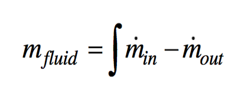
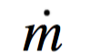
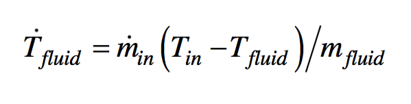
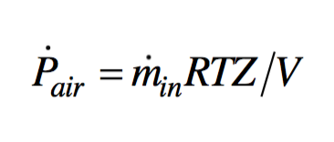
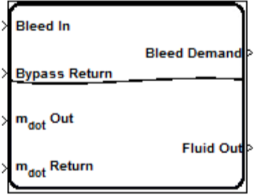
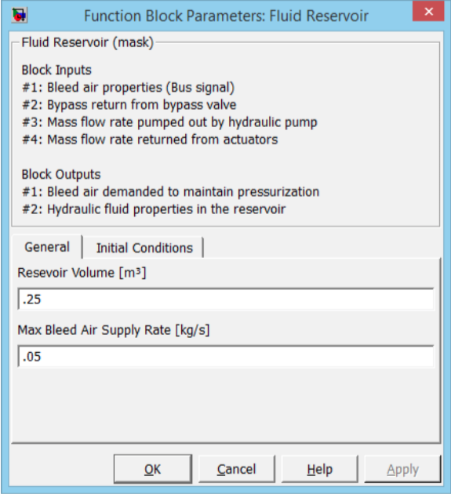
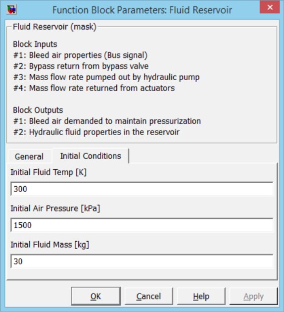

The fluid reservoir serves as a tank for storing excess hydraulic fluid. The reservoir is fed by returning hydraulic fluid and feeds the engine driven pump. Currently the fluid reservoir tracks the time dependent mass and temperature of the hydraulic fluid in the tank. In version 1.0 of the PowerFlow toolset, the reservoir is pressurized with bleed air from the engine.
The mathematical model of the fluid reservoir is based upon first principles. The mass of the fluid in the reservoir is calculated as:

whereis the flow rate of the hydraulic fluid and the subscripts denote into and out of the reservoir.
The rate of change in the reservoir fluid temperature is determined as a function of the flow rate the temperature of the flow in and fluid mass:

where the Tin is the temperature of the fluid flow into the reservoir and Tfluid is the temperature of the fluid in the tank.
The rate of change in the air pressure of the reservoir is determined using input bleed air properties and mass of the air in the tank:

wherein is the flow rate of bleed air into the reservoir, R is the universal gass law constant for air, T is the temperature of the bleed air into the reservoir, Z is the compressibility factor for air, and V is the volume of the air in the reservoir. The volume of the air changes in time with respect to how much volume of hydraulic fluid is within the reservoir.
The Simulink model for the hydraulic reservoir is displayed in Figure 5.67. The GUI is shown in Figure 5.68 and Figure 5.69. A top level diagram of the Simulink model is shown in Figure 5.70.



The first input to the hydraulic fluid reservoir is the fluid bus containing flow rate, temperature, and pressure variables of the bleed air which comes from the engine. The second input is the bypass return from the bypass or pressure release valve. This input is also a fluid bus containing the previously mentioned variables. The mass flow rate flowing out of the fluid reservoir is the third input which typically is calculated by the upstream engine driven pump. The engine driven pump provides this mass flow rate as an output. The final input is the mass flow rate of the returning hydraulic fluid from the loads. In version 1.0 of the PowerFlow toolset there is no thermal component to the hydraulic loads, so temperature changes in the hydraulic fluid flow are not captured between the pump and loads.
Output signals include a bleed air flow rate demand and output fluid flow bus. The bleed air demand is determined as a function of air pressure in the fluid reservoir and the desired set point.
The GUI of the hydraulic fluid reservoir provides the ability to input multiple parameters in order to specify the geometry and operation of the reservoir.Losses in the pump are calculated used the Hagen-Poiseuille Coefficient which require several nominal values of the fluid flow through the pump. The pump’s calculations do not have a large sensitivity to the values, but their relative magnitude should be accurate.
| Tab Name | Input | Units | Description |
|---|---|---|---|
| General | Fixed Reservoir Volume Max Bleed Air Supply Rate |
m3 kg/s |
The volume of the reservoir. Used in the calculation of air to fluid volume ratio. Maximum bleed air flow rate that is capable of being supplied to the reservoir. |
| Initial Conditions |
Initial Fluid Temperature Initial Air Pressure Initial Fluid Mass |
K kPa kg |
Initial fluid temperature of the hydraulic fluid in the reservoir in Kelvin. Initial air pressure of the reservoir in kilopascals. Initial mass of the hydraulic fluid in the reservoir. There is not check between the mass and available volume in the reservoir. |
| Output | Units | Description |
|---|---|---|
| Bleed Air Flow Rate | kg/s | The flow rate of the bleed air |
| Output Fluid Flow Bus | kg/s | The rate of fluid flow from the Fluid Reservoir |